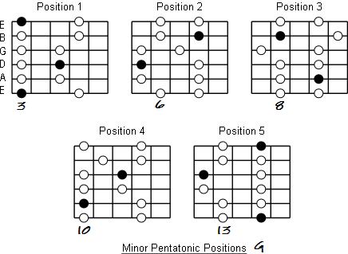
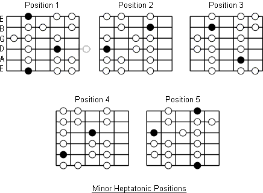
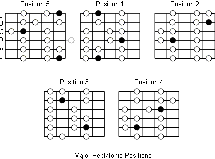
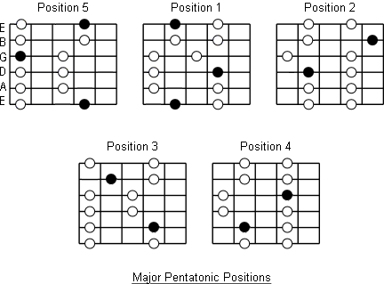

Some guitar shapes
Here's an empty fretboard. (Only up to the 12th fret)
0 1 2 3 4 5 6 7 8 9 10 11 12
e|---|---|---|---|---|---|---|---|---|---|---|---|
b|---|---|---|---|---|---|---|---|---|---|---|---|
g|---|---|---|---|---|---|---|---|---|---|---|---|
d|---|---|---|---|---|---|---|---|---|---|---|---|
a|---|---|---|---|---|---|---|---|---|---|---|---|
e|---|---|---|---|---|---|---|---|---|---|---|---|
And here's one up to the 17th.
0 1 2 3 4 5 6 7 8 9 10 11 12 13 14 15 16 17
e|---|---|---|---|---|---|---|---|---|---|---|---|---|---|---|---|---|
b|---|---|---|---|---|---|---|---|---|---|---|---|---|---|---|---|---|
g|---|---|---|---|---|---|---|---|---|---|---|---|---|---|---|---|---|
d|---|---|---|---|---|---|---|---|---|---|---|---|---|---|---|---|---|
a|---|---|---|---|---|---|---|---|---|---|---|---|---|---|---|---|---|
e|---|---|---|---|---|---|---|---|---|---|---|---|---|---|---|---|---|
Here's a fretboard with all the notes listed
0 1 2 3 4 5 6 7 8 9 10 11 12 13 14 15 16 17
e|--f|-f#|--g|-g#|--a|-a#|--b|--c|-c#|--d|-d#|--e|--f|-f#|--g|-g#|--a|
b|--c|-c#|--d|-d#|--e|--f|-f#|--g|-g#|--a|-a#|--b|--c|-c#|--d|-d#|--e|
g|-g#|--a|-a#|--b|--c|-c#|--d|-d#|--e|--f|-f#|--g|-g#|--a|-a#|--b|--c|
d|-d#|--e|--f|-f#|--g|-g#|--a|-a#|--b|--c|-c#|--d|-d#|--e|--f|-f#|--g|
a|-a#|--b|--c|-c#|--d|-d#|--e|--f|-f#|--g|-g#|--a|-a#|--b|--c|-c#|--d|
e|--f|-f#|--g|-g#|--a|-a#|--b|--c|-c#|--d|-d#|--e|--f|-f#|--g|-g#|--a|
Here's a simple spare fretbord, with thicker strings shown thick:
e|-------------
B|-------------
G|-------------
D|=============
A|=============
E|=============
And another with some frets drawn in
0 1 2 3
e |---|---|---|--
b |---|---|---|--
g |---|---|---|--
d |---|---|---|--
a |---|---|---|--
E |---|---|---|--
Here's a place where you can play A pentatonic minor. You can shift that pattern up or down the neck. I've marked the root note as R and the V note as capital X. I call this the 'up' pattern, because it's upward of the root note.
It's also known as 'Position 1'
0 1 2 3 4 5 6 7 8 9 10 11 12
e|---|---|---|---|--R|---|---|--x|---|---|---|---|
b|---|---|---|---|--X|---|---|--x|---|---|---|---|
g|---|---|---|---|--x|---|--x|---|---|---|---|---|
d|---|---|---|---|--x|---|--R|---|---|---|---|---|
a|---|---|---|---|--x|---|--X|---|---|---|---|---|
e|---|---|---|---|--R|---|---|--x|---|---|---|---|
Or you can play this adjacent shape. Which can also be shifted up or down for different keys. I think of this as the 'down' pattern.
0 1 2 3 4 5 6 7 8 9 10 11 12
e|---|---|--x|---|--R|---|---|---|---|---|---|---|
b|---|---|--x|---|--X|---|---|---|---|---|---|---|
g|---|--R|---|---|--x|---|---|---|---|---|---|---|
d|---|--X|---|---|--x|---|---|---|---|---|---|---|
a|---|---|--x|---|--x|---|---|---|---|---|---|---|
e|---|---|--x|---|--R|---|---|---|---|---|---|---|
Within those scales/shapes you can add two notes to take it to A heptatonic minor. See the 'o's below.
0 1 2 3 4 5 6 7 8 9 10 11 12
e|---|---|---|---|--R|---|--o|--x|---|---|---|---|
b|---|---|---|---|--x|--o|---|--x|---|---|---|---|
g|---|---|---|--o|--x|---|--x|---|---|---|---|---|
d|---|---|---|---|--x|---|--R|---|---|---|---|---|
a|---|---|---|---|--x|---|--x|--o|---|---|---|---|
e|---|---|---|---|--R|---|--o|--x|---|---|---|---|
And for the down pattern (position 5):
0 1 2 3 4 5 6 7 8 9 10 11 12
e|---|---|--x|---|--R|---|---|---|---|---|---|---|
b|---|---|--x|---|--X|--o|---|---|---|---|---|---|
g|---|--R|---|--o|--x|---|---|---|---|---|---|---|
d|---|--X|--o|---|--x|---|---|---|---|---|---|---|
a|---|--o|--x|---|--x|---|---|---|---|---|---|---|
e|---|---|--x|---|--R|---|---|---|---|---|---|---|
You can also add a classic 'blue' note to the up pattern like so (marked as 'b'):
0 1 2 3 4 5 6 7 8 9 10 11 12
e|---|---|---|---|--R|---|---|--x|---|---|---|---|
b|---|---|---|(b)|--X|---|---|--x|---|---|---|---|
g|---|---|---|---|--x|---|--x|--b|(x)|---|---|---|
d|---|---|---|---|--x|---|--R|---|---|---|---|---|
a|---|---|---|---|--x|--b|--X|---|---|---|---|---|
e|---|---|---|---|--R|---|---|--x|---|---|---|---|
The blue note is often played in passing (well, that's how I play it anyway), so I've indicated a few extra locations of this note, which make it easier to slide over this brief note.
This is just how I think on a fretboard.
Here is a classic way to travel up the board, moving through more than one shape.
0 1 2 3 4 5 6 7 8 9 10 11 12
e|---|---|---|---|---|---|---|--x|---|--x|--b|--x|
b|---|---|---|---|---|---|---|--x|---|--R|---|---|(x)|
g|---|---|---|---|--x|---|--x|--b|--x|---|---|---|
d|---|---|---|---|--x|---|--R|---|---|(x)|---|---|
a|---|---|---|---|--x|--b|--X|---|---|---|---|---|
e|---|---|---|---|--R|---|---|--x|---|---|---|---|
Here's one part of the fretboard which forms a 'classic' shape, not mentioned above (it's part of position 2) :
0 1 2 3 4 5 6 7 8 9 10 11 12
e|---|---|---|---|---|---|---|--x|---|--x|---|---|
b|---|---|---|---|---|---|---|--x|---|--R|---|---|
g|---|---|---|---|---|---|---|---|--x|---|---|---|
d|---|---|---|---|---|---|---|---|---|---|---|---|
a|---|---|---|---|---|---|---|---|---|---|---|---|
e|---|---|---|---|---|---|---|---|---|---|---|---|
Some blues musicians will noodle around on just those five locations for an entire solo.
(And of course you could shift these patterns up or down to transpose to a different key. This is shown in A)
Pent Minor positions:

"Natural minor" positions

Major (hept) positions

Major Pentatonic Positions
